|
Excel |
Formulas Menüsü(Fonksiyonlar) |
5 |
Lookup(Arama) Fonksiyonları
Benim şahsi gözlem ve tecrübeme göre arama/bulma/referans grubundaki fonksiyonlar az bilinen, bilinse dahi az kullanılan, kullanılsa
dahi
tam kapasitede kullanılmayan fonksiyonlardandır. Ne yazık ki, bu durumda olan
birçok Excel kullanıcısı işlerini çok daha uzun yollardan yapmaktadır. Bu da
ilgili kurumda üretkenlik kaybına neden olmaktadır.
Şimdi bu fonksiyonları (daha etkin) kullanarak
işimizi nasıl daha verimli yaparız, bunları göreceğiz. Sayfa boyunca
kullanılan örnekleri içeren dosyayı
buradan
indirebilirsiniz.
Bu bölümde anlatılanların bir kısmına ait video eğitimini
Udemy sayfamda bulabilirsiniz.
EDIT(2021): Office 365 ile gelen XLOOKUP fonksiyonunu INDEX-MATCH fonksiyonlarından hemen sonraya koydum, ki hayatımızı nasıl kolaylaştırdığını daha iyi görün.
VLOOKUP
Giriş
Vlookup, bana göre ortalama bir Excel kullancısı için en önemli fonksiyondur. Gerçi zaman geçtikçe
bunun da eksikliklerini görecek ve alternatif yollar aramanız gerekecek. Bu
kısımada öncelikle Vlookup'ı daha etkin nasıl kullanırız, ona bakacağız;
sonrasında da kendisinin yetersiz kaldığı durumlarda neler yapabileceğimize.
Vlookup(aranan,aramayeri,kaçıncıkolon,[eşleşmetipi]) şeklinde bir syntaxa sahip olan Vlookup'ta arama
işlemi "arama yeri"ndeki ilk kolonda yapılır. Aranan değer bulunduğununda, buna karşılık gelen esas istediğimiz sonuç,
ilgili alanın belirtilen kolonunda bulunur ve getirilir. Eğer aranan değer ilk kolonda bulunamazsa
formül sonucu #N/A döner.
Arama alanı
Arama alanı olarak, tüm kolon seçilebileceği gibi $B$1:$C$10 şeklinde sadece ilgili alanın seçimi şeklinde de olabilir. Ayrıca bir Table'a da lookup işlemi yapılabilir(Table detayları için
buraya bakabilirsiniz.) Yine Named Range kullanımı da okuma kolaylığı sağlayacaktır.
Aşağıda çeşitli vlookup işlemleri görülmektedir
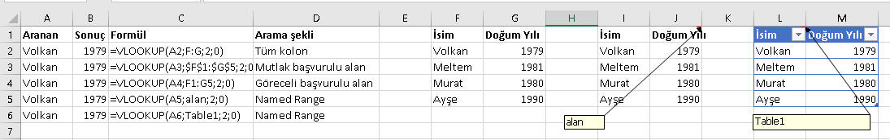
Kolon indexi ve sağa doğru kaydırma
Vlookup formülünüzü yazarken genelde sabit bir kolon indeksi gireriz. Formülümüzü kaydırarak kopayalasak bile bu indeks sabit olduğu için hep aynı kalır.
Ancak, bu formül içeren hücreyi sağa doğru kaydırırken kolon indeksinin de artarak gitmesini istediğimiz durumlar olacaktır. Aşağıdaki tabloda olduğu gibi;
en sağ hücredeyim ama indeks hala 2.
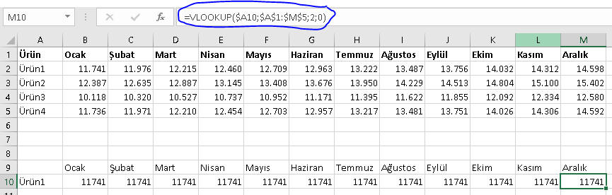
Böyle durumlarda genelde arama alanının üstüne yardımcı bi satır açılır
ve kolon indeksi oradan alınır.
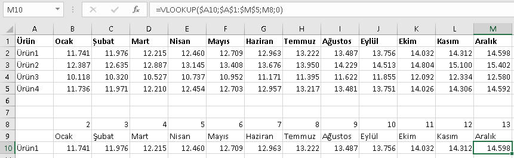
Bu bir çözümdür ancak şık bir çözüm değildir.
Ana sayfada ne demiştik, işleri sadece doğru yapmak yetmez, hızlı ve zarif de yapmalıyız.
Gerçi bu yöntem hızlıdır, ama zarif değildir. Eğer acil ve/veya geçici
bir bilgiye ihtiyacınız varsa bu tür yöntemler kabul edilebilir. Ancak daha
kalıcı bir çözüm istiyorsak böyle yöntemler uygun değildir. Zira bu sayfayı
print almak istediğimizde bu yardımcı satır da basılır ve bu da çok hoş
olmaz.
Böyle bir durumda COLUMN veya daha iyisi MATCH formülünden faydalanabiliriz. Önce
COLUMN yöntemine bakalım. (Bu fonksiyonu daha detaylıca aşağıda ele alacağız.)
=VLOOKUP(aranan,alan,COLUMN()-/+x,0)
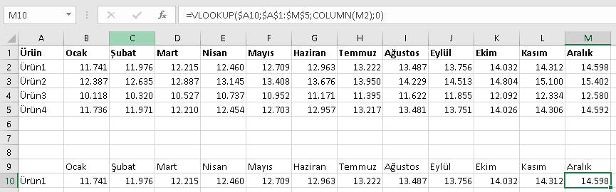
Bu örnekte x yerine birşey yazmak gerekmedi ancak bazen kolonun yerine
göre bir değer girmek gerekebiliyor. Column(M2)-5 gibi.
İkinci çözüm MATCH fonksiyonu ile sağlanır. Üstelik bunda COLUMN'da
olduğunun aksine +/- bir diğer girme zorunluluğu yoktur.
=VLOOKUP($A10,$A$1:$M$5,MATCH(B9;$B$1:$M$1;0),0)
Burda MATCH, Ocak ayının B1:M1 içindeki yerine bakıyor, kaçıncı kolonda
olduğunu bulup onu getiriyor, yani 2'yi. Formülü kaydırdığımızda da diğer
ayların kolon sırasını da ona göre getiriyor.
MATCH'in COLUMN veya yardımcı satır yöntemine göre bir üstünlüğü de
kolonların yeri değişse bile doğru sonuç getirmesidir. Diğer iki yöntemde
ise kolonların yeri değişirse, mesela aylar alfabetik sıralı gelse veya
Aralıktan Ocak'a doğru sıralanmış olsa, formül hatalı sonuç getirir.
Bir diğer alternatif de aşağıdaki gibi kayarak ilerlemeyi sağlayan bir UDF yazmaktır.
UDF açıklamlarını fonksiyonlar sayfasında detaylıca ele alacağımız
için burada tekrar yapmak istemedim.
Süperlookup UDF'i için tıklayınız
Kullanım örneği için
buraya tıklayınız.
Function süperlookup(alan As Range, sütun As Range, aranan As Range)
'paramterlerin sırası klasik vlookupa göre farklıdır
On Error GoTo hata
süperlookup = alan.Columns(1).Find(aranan, lookat:=xlWhole).Offset(0, sütun.Column - alan.Columns(1).Column).Value
Exit Function
hata:
süperlookup = "Bulunamadı"
End Function
Eşleşme tipi
Vlookup'ın son parametresi genellikle tam eşleşmeyi sağlamak için 0 (veya False) şeklinde girilir. Ancak bize tam eşleşme değil de en yakın eşleşme lazımsa bu değer 1
(veya True) olarak girilebilir ya da bu parametrenin varsayılan değeri zaten 1 olduğu için hiç girilmeyebilir. En yakın eşleşme olarak kendisinden en küçük değere bakar.
Böyle bir duruma ne zaman ihtiyacımız olur bunu birazdan göreceğiz.
Yanlız burada dikkat edilmesi gereken bir nokta var, o da eğer parametre olarak 1 kullanılacaksa arama alanının sıralı olmasına dikkat edilmelidir.
Aksi halde aşağıdaki gibi beklenmeyen sonuçlar çıkabilir. Hatta işin pis tarafı, bazen çıkan sonuç bir hata değil, gayet normal beklenen değerler olabilir ama yanlıştır(Aşağıdaki
örnekte 500 çıkması gerekirken 105 çıkması gibi).
=VLOOKUP(A2;D:E;2) //B2'deki formül
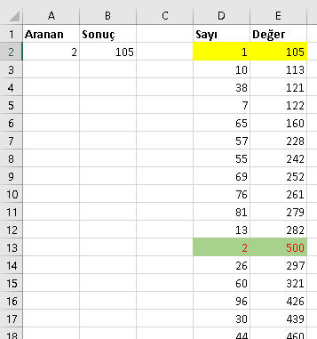
Bu yöntem şu şekilde işler. Listede en yukardan aramaya başlar, kendinden
küçük bir değer görünce bunu bi kenara yazar, sonra bi aşağı satıra bakar,
hala kendinden küçük ama bi öncekinden büyükse bu sefer yeni satırdaki
değeri alır, ta ki kendinden büyük bir değere denk gelinceye kadar. O anda
durur ve o ana kadar kendisinden küçük olup ona en yakın değer hangisiyse
onu baz alır. Bu yukardaki örnekte 2'yi arıyoruz, 2 aşağılarda kalmış. En
yukarda 1'i görür, sonraki değer 10 olup 2den büyük olduğu için aramayı durdurur.
Gördüğünüz gibi son parametrenin 1 olarak kullanımı tehlikelidir ve çok
dikkat gerektirir.
İçiçe IF yerine Vlookup
Vlookup'ın son parametresinin 1 olarak kullanılması tehlikelidir tehlikeli
olmasına ama doğru kullanıldığında bizi bir sürü dertten kurtarır. Bunlardan
biri de içiçe IF
formülü yazmaktan kurtarması durumudur. Aşağıdaki örnek üzerinden gidelim.
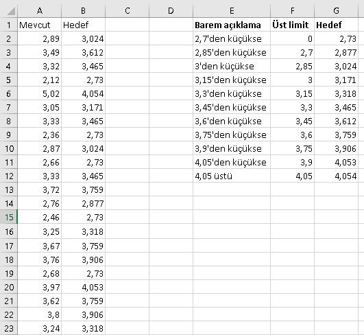
//bu formül yerine
=IF(A2<2,7;2,73;IF(A2<2,85;2,877;IF(A2<3;3,024;IF(A2<3,15;3,171;IF(A2<3,3;3,318;IF(A2<3,45;3,465;IF(A2<3,6;3,612;IF(A2<3,75;3,759;IF(A2<3,9;3,906;IF(A2<4,05;4,053;4,054))))))))))
//bu formül çok daha kısa ve dolayısıyla verimlidir
=VLOOKUP(A2;F:G;2;1)
Dikkat ettiyseniz F kolonundaki arama alanı sıralıdır. Bunu bir önceki kısımda
özellikle vurgulamıştık.
Arama alanında araya kolon ekleme
Hali hazırda Vlookup uyguladığınız bir sayfada, arama alanında araya bir yere yeni kolon eklenirse
ve bu yeni kolonun sağında kalan kolonlardan
bir data çekiyorsanız bunlar patlar. Çünkü formülün içindeki kolon index numarası değişmez.
=VLOOKUP(A2;E:F;2;0)
Şimdi E:F arasına 3 kolon ekleyelim, E:F'nin E:I odluğunu ama 2'nin değişmediğini görüyoruz.
=VLOOKUP(A2;E:I;2;0)
Bunu engellemek için MATCH fonksiyonunu
formülün içine eklemekte fayda var. Formülü MATCH kullanarak yazalım:
=VLOOKUP(A2;E:F;MATCH($B$1;$E$1:$F$1;0);0)
Şimdi E:F arasına 3 kolon ekleyelim. Formül hala doğru çalışıyordur, zira MATCH'li formül otomatikman genişledi.
=VLOOKUP(A2;E:I;MATCH($B$1;$E$1:$I$1;0);0)
Bir diğer seçenek de INDEX-MATCH ikilisini kullanmaktır, ki bunu aşağıda göreceğiz.
Hızlı Vlookup için optimizasyon çalışması
Vlookup çok faydalı bir fonksiyon olmakla birlikte, özellikle büyük data kümelerinde kullanımı dikkat gerektirir.
Bunun için bazı tüyolarımız olacak.
- Arama listesi mümkünse aynı dosyada, hatta mümkünse aynı sayfada olsun.
Özellikle geçici bir lookup işlemi yapacaksanız geçici veriyi aynı sayfaya
alabilir ve sorasında silersiniz.
- Arama alanı olarak her ne kadar tüm kolon seçimi(B:E gibi) daha pratik olsa da performans kaygınız varsa sadece ilgili alanın seçimi
(B2:E10 gibi) daha verimli olacaktır.
Özellikle birkaç onbin satırdan fazla bir data kümesine lookup çekiyorsanız sadece ilgili alan eşleşmesi yapın.
- Arama listesi sıralı olsun.
- Aşağıdaki hızlı lookup formülünü kullanın
.
Bu formülde önce aranan yeri sıralamamız gerekir. Sıralanmış listeye, yakın
eşleşme moduyla baktığımızda eşleşme sağlanırsa bu eşleşme sonucunu getir,
sağlanmazsa NA getir diyoruz. Tam eşleşme modu tüm listeye baktığı için çok daha uzun sürer.
=IF(VLOOKUP(A2;Sheet1!A:A;1;1)=A2;VLOOKUP(A2;Sheet1!A:B;2;1);NA())
Yukarıdaki formül karışık geldiyse aşağıdaki UDF olarak hazırlanmış fonksiyonu da kullanabilirsiniz. Ancak
Excel'in yerel fonksiyonları kullanıldığı için üstteki yöntem daha hızlıdır.
Aşağıda bi hız karşılaştırması var zaten, orda en hızlı yöntemin hemen üstteki
formül olduğunu görürsünüz.
Hızlılookup UDF'i için tıklayınız
Function hızlılookup(aranan As Range, alan As Range, kolon As Integer)
If WorksheetFunction.VLookup(aranan, alan, 1, 1) = aranan Then
hızlılookup = WorksheetFunction.VLookup(aranan, alan, kolon, 1)
Else
hızlılookup = "NA"
End If
End Function
Deneme olması adına 500bin satırlık sırasız bir listede çeşitli lookup işlemleri yaptım. Veriler şöyle:
| Sıralı mı |
Eşleşme Tipi |
Süre |
| Evet | Tam | %1e 2 sn'de geliyor |
| Evet | Yakın | %100e 1 sn'de geliyor |
| Evet | Yakın(UDF) | %1e 2,5 sn'de geliyor |
| Hayır | Tam | %1e 2 sn'de geliyor |
| Hayır | Yakın | Hatalı sonuç verir |
PC konfigürasyonuna göre hızların değişeceği aşikardır, ama oranlar üç aşağı
beş yukarı aynı kalır.
NOT: VBA ile UDF yazmak yerine XLL ile UDF yazarak da performansı artırabilirsiniz. İlginizi çekerse buradan bakabilirsiniz.
Eksiklikler
Gördüğünüz ve/veya bildiğiniz üzere, Vlookup sola doğru arama işlemi yapmıyor. Her zaman pozitif bir değer veriyorsunuz ve sağa doğru arama yapıyorsunuz.
Bu sorunu aşmak için ya INDEX-MATCH ikilisi kullanılır, ki bunları bir aşağıdaki bölümde göreceğiz, veya bir UDF tanımlamanız gerekir. Benim bunun için hazırladığım bir fonksiyon var. VBA bilenler bu kodu inceleyebilirler.
Terslookup UDF'i için tıklayınız
Function terslookup(aranan As Variant, hedefalan As Range, kaçıncı_kolon)
Dim index1 As String, match2 As String
Dim aynıwb As Boolean, aynıws As Boolean
aynıwb = IIf(hedefalan.Parent.Parent.Name = ActiveWorkbook.Name, True, False)
aynıws = IIf(hedefalan.Parent.Name = ActiveSheet.Name, True, False)
If aynıwb Then
If aynıws Then
match2 = hedefalan.Columns(hedefalan.Columns.Count).Address
index1 = hedefalan.Columns(hedefalan.Columns.Count + 1 - Abs(kaçıncı_kolon)).Address 'niye abs, olur da negatif girmezler diye önce
Else
match2 = "'" & hedefalan.Parent.Name & "'!" & hedefalan.Columns(hedefalan.Columns.Count).Address
index1 = "'" & hedefalan.Parent.Name & "'!" & hedefalan.Columns(hedefalan.Columns.Count + 1 - Abs(kaçıncı_kolon)).Address
End If
Else
match2 = "'[" & hedefalan.Parent.Parent.Name & "]" & hedefalan.Parent.Name & "'!" & hedefalan.Columns(hedefalan.Columns.Count).Address
index1 = "'[" & hedefalan.Parent.Parent.Name & "]" & hedefalan.Parent.Name & "'!" & hedefalan.Columns(hedefalan.Columns.Count + 1 - Abs(kaçıncı_kolon)).Address
End If
If IsNumeric(aranan) Then
strx = "INDEX(" & index1 & ",Match(" & aranan & ", " & match2 & ", 0))"
Else
strx = "INDEX(" & index1 & ",Match(""" & aranan & """, " & match2 & ", 0))"
End If
terslookup = Evaluate(strx)
End Function
İkinci olarak, çoklu kritere göre Vlookup yapmak için yardımıcı kolon gerekiyor, bu da tek seferde hedefe ulaşmamızı engelleyen
ve şık olmayan bir yöntem anlamına geliyor. Bunun üstesinden zarif ve etkin bir
biçimde gelmek için yine INDEX-MATCH ikilisini kullanırız.
Zarif olmayan yönteme bi bakalım, aşağıda INDEX-MATCH yöntemiyle siz
bilahare karşılaştırma yaparsınız.
Aşağıdaki örnekte Bölge1'in Toplam ürün satışına göre 1. şubesinin Ürün1 rakamını getirelim.
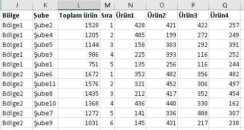
Önce N kolonuna yardımcı kolonu açalım,
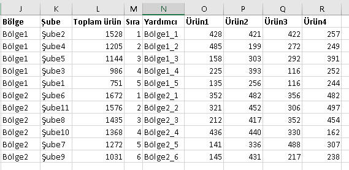
Formülümüz şöyle olacaktır:
=VLOOKUP("Bölge1_1";N:R;2;0) //Aranan değeri elle girdim ama bunu bir hücreden de okutabilirdik
Dediğim gibi bu yöntem şık değildir, üstelik tablo yapınızı değiştirdiği için
tehlikeli de olabilir, zira başka yerlerdeki formülleriniz de bu tablodan data
çekiyorsa sıkıntılar oluşabilir.
Üçüncü olarak Vlookup her zaman ilk gördüğü eşleşme sonucunu getirir, ancak siz özellikle ilk eşleşme değil de sonraki eşleşme
veya tüm eşlemelerin sonucunu yanyana görmek isterseniz başka birşeyler yapmanız gerekir.
Bunu da aşağıdaki kısımlarda çok eşleşmeli lookup başlığı altında
görebilirsiniz.
Özet
- Vlookup her zaman sağa doğru arama yapar. Sola doğru arama için Index-Match kullanılmalı.
- Vlookup her zaman tek kritere göre arama yapar. Çok kolon için ya Index-Match kulanılmalı, ya da yardımcı kolonda birleştirme yapılmalı(önerilmez)
- Vlookup her zaman ilk değeri getirir, ikinci değer için yardımcı kolon kullanmak gerekir. Bu yardımcı kolonda da aşağı kayan bir COUNTIF kullanılır.
Bu yöntem zahmetlidir. Aşağıda gösterilecek olan UDF kullanımı çok daha
basittir.
- Vlookup küçük büyük harf ayrımı gözetmez.
- Vlookup'ın tam ve yaklaşık olmak üzere iki arama şekli vardır.
- Vlookup joker karekterlerini kullanmaya izin verir.
HLOOKUP VE LOOKUP
HLOOKUP
Eğer lookup işlemini kolonda değil de satırda yapma durumu varsa o zaman HLOOKUP kullanırız. VLOOKUP'ta ilk kolona bakılırken bunda ilk satıra bakılarak lookup işlemi yapılır.
Genel mantık Vlookup ile aynıdır.
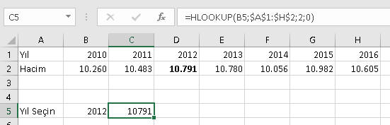
=HLOOKUP(B5;$A$1:$H$2;2;0)
LOOKUP
VLOOKUP ve HLOOKUP'ın hem satırda hem sütunda çalışan bir formudur. Diğer ikisine göre eksikliği
sadece sıralı datada çalışıyor olması.
Artıları ise daha fazla. İlave bir parametre girmeden, bulabilyorsa tam eşleşmeyi yapar, bulamazsa aranan değerden en küçük değeri getirir. Ayrıca vlookup sadece sağa, hlookup sadece aşağı giderken LOOKUP ise her yöne doğru arama yapabilmektedir.
İki formu vardır; array ve vektör. Birçok yerde sadece vektör formu gösterildiği için
ben de buna sadık kalıyorum.
=LOOKUP(C20;$B$16:$B$18) //varmı diye bakar, varsa kendisini getirir, yoksa N/A
=LOOKUP(C20;$B$16:$B$18;$C$16:$C$18) //varsa belirtilen kolondaki eşleşen veya en yakın datayı getirir
Bu arada bir dezavantaj da şudur ki, çok kolonlu lookup işlemi yapılamaz. Bunun için
yine meşhur INDEX-MATCH kombinasyonu kullanılmalıdır.
MATCH, INDEX, OFFSET
MATCH
Bir veri dizisi içinde bir elemanın kaçıncı olduğunu
MATCH fonksiyonu ile
buluruz. Mesela aşağıdaki tabloda hem kolonda(F1:H1) hem de satırda(E2:E4)
dizilmiş a,b,c değerleri var. Bunların sırasını buluyoruz.
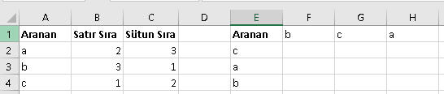
=MATCH(A2;$E$2:$E$4;0) //Satır
=MATCH(A2;$F$1:$H$1;0) //Sütun
Match, illa bir hücre dizisiyle kullanılmak zorunda değil. { } içindeki
dizilerle de kullanılabilir. Diziler ve dizi formülleri için
buraya
bakabilirsiniz.
=MATCH(2;{5;7;2;6;4};0) //3 döner
Son parametresi eşleşme tipini gösterir ve genelde tam eşleşmeyi temsilen
0/False girilir. 1 girilirse ve tam eşleşme yoksa aranandan küçük, -1
girilise aranandan büyük değeri getirir.
MATCH'in dizilerle olan bu kullanımı, onu
dizi
formüllerinin aranan fonksiyonu yapmaktadır.
INDEX
Index'in olayı, bir veri dizesinde belirtilen indeksteki elemanı
getirir. Eğer tek parametre varsa, tek kolonluk bir veri vardır ve satırda
arama yapar, diğer durumlarda satır ve sütun kesişimine bakar. Yani bu
fonksiyonla aklınızda kalması gereken en önemli kelime kesişimdir.
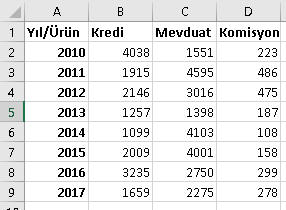
=INDEX(B2:D9;2;3) //2.satır 3.kolon-->486
=INDEX(B2:B9;2) //2.satır-->1915
Formülümüzü illa data kümesini seçerek değil, seçime başlıkları da dahil
ederek oluşturabiliriz.
=INDEX(A1:D9;3;4) //486
INDEX-MATCH
Index ve Match bir arada kullanıldığında etkisi müthiş olur. Bu şekilde
hem Vlookup'ın alternatifidir, hem de Vlookup'ın yapamadığı sola gitme ve
çoklu kritere göre lookup yapma imkanı verir.
Sola giden vlookup
Aşağıdaki örnekte Şube2'nin bölgesini bulalım.
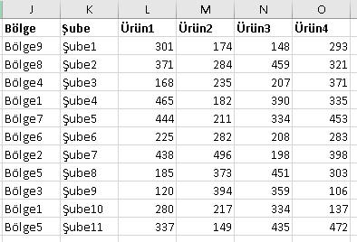
=INDEX(J1:J12;MATCH("Şube2";K1:K12;0))
Formülün yaptığı iş şu:Önce MATCH ile, Şube2'nin K1:K12 içindeki sırasını
buluyoruz. Sonra bu sıra numarasını ,INDEX ile J1:J12 içinde arıyoruz.
Çok kriterli vlookup
Aşağıdaki örnekte Bölge2'nin Toplam ürün satışıan göre 1.şubesinin adını
ve Ürün1 rakamını getirelim.
=INDEX(K:K;MATCH("Bölge2"&1;J:J&M:M;0)) //Şube6
Çok kriterli aramalarımızda kullandığımız formül, bir dizi formülü olmak durumunda. Zira Match ile iki ayrı
değer(önce Bölge değerini sonra da sıra değerini) arıyoruz. O yüzden formülü
bitirince normal Enter yapmak yerine Ctrl+Shift+Enter yapıyoruz.
Bunun detaylarını
dizi
formülleri sayfasında göreceğiz. Formülü doğru girdiğinizden emin olmak
için formülün başında ve sonunda süslü parantezleri "{ ve }" görüp görmediğinize
bakabilirsiniz.
{=INDEX(K:K;MATCH("Bölge2"&1;J:J&M:M;0))}
Büyük listelerde çok kriterli lookup
Yanlız veri kümemiz çok büyükse ne yardımcı kolonlar açmak ne de INDEX/MATCH kullanmak işe yarar.
Belki yardımcı kolonlar aracılığı ile yukarıda gördüğümüz optimizasyon
yöntemini kullanmak çzüm olabilir. Ancak bu çözümün de uygulanmadığı
durumlarda Access'e başvurmanız gerekebilir. Bununla ilgili örnek bir
videoyu
Udemy'deki ücretsiz eğitimimde anlattım(10.video: Büyük veri
kümeleriyle çalışmak).
Çok Eşleşmeli Vlookup
Bazen, lookup yaptığımız alanda birden fazla eşleşme varsa hepsinin sonucunun
gelmesini isteriz. Normal Excel fonksiyonları ile bunu yapmak çok olası değil.
Aslında oldukça dolambaçlı yollardan bunu yapanlar var ama ben buna girmek
istemiyorum. Bunun yerine aşağıdaki UDF'i kullanmak çok daha kolaydır.
Function çok_eşleşmeli_vlookup(aranan As Range, alan As Range, kaçıncıkolon As Integer)
Dim a As Range
Dim dict As New Scripting.Dictionary 'Reference olarak eklenmiş olmalı, ekli değilse Late binding olarak yaratılabilir
If alan.Columns(1).Rows.Count = 1048576 Then
Set alan = Range(alan(1, 1), alan(1, 1).End(xlDown))
End If
For Each a In alan.Resize(, 1)
If Not dict.Exists(a.Value) Then
dict.Add a.Value, a.Offset(0, kaçıncıkolon - 1).Value
Else
geçici = dict(a.Value)
dict.Remove (a.Value)
dict.Add a.Value, geçici & ";" & a.Offset(0, kaçıncıkolon - 1).Value 'x
End If
Next a
çok_eşleşmeli_vlookup = dict(aranan.Value)
End Function
NOT: Yukarıda sonunda x bulunan satırı kaldırıp aşağıdaki 2 satırı
eklersek, eşleşen değerleri bize distinct(benzersiz) olarak getirir.
x = a.Offset(0, kaçıncıkolon - 1).Value
dict.Add a.Value, geçici & IIf(InStr(1, geçici, x, vbTextCompare) > 0, "", ";" & x)
Aslında kodu daha kullanışlı hale getirebiliriz, bunun için bi parametre daha ekleyelim.
Function çok_eşleşmeli_vlookup(aranan As Range, alan As Range, kaçıncıkolon As Integer, Optional distinctmi As Boolean = True)
Dim a As Range
Dim dict As New Scripting.Dictionary 'Reference olarak eklenmiş olmalı, ekli değilse Late binding olarak yaratılabilir
If alan.Columns(1).Rows.Count = 1048576 Then
Set alan = Range(alan(1, 1), alan(1, 1).End(xlDown))
End If
For Each a In alan.Resize(, 1)
If Not dict.Exists(a.Value) Then
dict.Add a.Value, a.Offset(0, kaçıncıkolon - 1).Value
Else
geçici = dict(a.Value)
dict.Remove (a.Value)
x = a.Offset(0, kaçıncıkolon - 1).Value
If distinctmi = True Then
dict.Add a.Value, geçici & IIf(InStr(1, geçici, x, vbTextCompare) > 0, "", ";" & x)
Else
dict.Add a.Value, geçici & ";" & a.Offset(0, kaçıncıkolon - 1).Value
End If
End If
Next a
çok_eşleşmeli_vlookup = dict(aranan.Value)
End Function
OFFSET
Bir referansa(başlangıç noktasına) göre X satır altında/üstünde ve Y sütun
sağında/solunda hücreye başvurmak istediğimizde OFFSET fonksiyonunu
kullanırız. Pozitif rakamlar sağı ve aşağıyı gösterirken, negatif rakamlar
solu ve yukarıyı gösterir.
Yükseklik ve genişlik olmak üzere iki de opsiyonel parametresi
vardır. Bunlar belirtilmezse, referansın yükseklik ve genişliği baz
alınır. Özetle syntax şöyle: OFFSET (Referans,
satır, sütun, [yükseklik], [genişlik])
=OFFSET(A2;2;1) //B4
=OFFSET(C2;2;-1) //B4
=OFFSET(C2;-2;1) //D1
Kayarak ilerleyen alanlardaki formüller
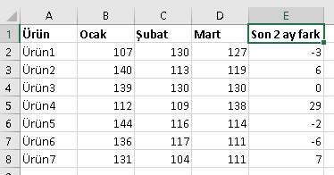
Yukardaki tabloda D ve E kolonları arasında Nisan eklense bile formülün kendisi de içeriği de aynı kalır;E2
için konuşacak olursak formül D2-C2'dir, yeni kolon eklenince de aynı kalır.
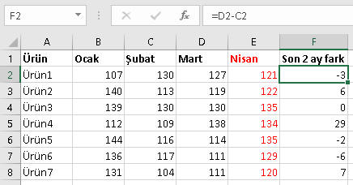
Araya Nisan eklenince, istediğimiz sonucu elde etmek için formülü değiştirmemiz
yani E2-D2
yapmamız gerekir. Amma ve lakin, her ay yeni kolon eklendikçe de bununla uğraşamayız.
Şimdi aynı şeyi OFFSET ile yapalım ve "2 kolon soldaki rakamdan 1 kolon soldaki
rakamı çıkar" diyelim.
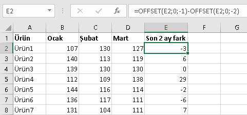
Araya kolon girince formülün sonucu
farklılaşır. Bundan sonra E kolonuna Nisan rakamlarını koymak yeterli
olacaktır.
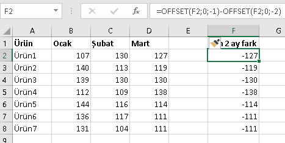
Böyle, sürekli değişen satır/sütun işlemlerinde OFFSET kullanmak
idealdir. Son 3 ayın ortalaması, son 5 ayın maksimumu v.s gibi.
=AVERAGE(OFFSET(OFFSET(H2;0;-1);0;0;1;-3))
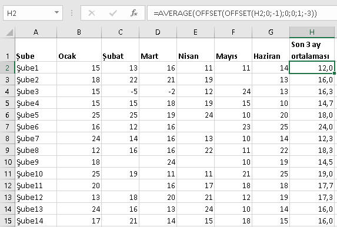
Formül açıklaması şöyle:Önce OFFSET(H2;0;-1) formülü ile bulunduğumuz
hücrenin bir soluna gidiyoruz. Bu sefer bunu referans verip -3 genişlik
diyoruz, bu şu demek oluyor. Bu hücre dahil, sola doğru toplam 3 hücre
genişliğinde bir hücre grubu döndür, sonra da bunların ortalamasını al.
Komşu hücreye giderek referans bulmak kolay, komşu olmayan hücrede nasıl
yapacağımıza da bakalım. Hem bu sefer de sütunda bu işlem nasıl yapılır onu
görelim.
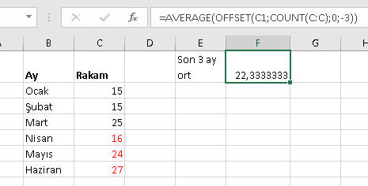
=AVERAGE(OFFSET(C1;COUNT(C:C);0;-3))
Buradaki açıklama da şöyle:C1 hücresini referans al, C kolonundaki
numerik içerikli hücre sayısı kadar yani 6 satır aşağı in, yani C7
hücresine, ve sonra da C7 dahil olmak üzere önceki yukarı doğru 3 hücre seç,
yani C5,C6,C7, bunların da ortalamasını al.
OFFSET'e referans olarak kolon da verilebilir
Mesela belli bir kolonun hep bir sağındaki kolondaki rakamları toplamak
istersek aşağıdaki formülü yazarız.
=SUM(OFFSET(E:E;0;1))
Dinamik Named Range
Normalde data kaynağımızın dinamik olmasını istediğimizde
Table kullanmayı tercih ederiz.
Böylece datamıza yeni alan eklendiğinde bu data kümemize erişen başka
formülleri güncellemek zorunda kalmayız. Ancak bazı durumlarda (bir nedenden
ötürü) tablomuzu Table yapamayız. Txt dosyalarının otomatik refresh olduğu
durumlar gibi. Böyle durumlarda Dinamik Named Range kullanmamız gerekir.
Böylece data kümemiz her yeni data geldikçe otomatik genişler, data silindikçe de otomatik daralır.
Bunun için Named Rangelerden, OFFSET ve COUNTA formüllerinden faydalacağız. Genel formülümüz şöyledir
=OFFSET(başlangıç_hücresi,0,0,COUNTA(tüm_kolon),COUNTA(teksatırlık_range))
Formülün mantığı şu. Bşalnagıç hücresinden itibaren satır ve üstun olarka ilerleme, yerinde kal, ama yüksekliğin
tüm kolonda seçtiğin dolu hücre sayısı kadar olsun, genişliğin de belirttiğin kolon sayısı kadar olsun. Bu son parametreye
duruma göre 1 de girilebilir.
Aşağıdaki örnek üzerinden bakacak olursak, listeye sürekli siciller
ekleniyor ve biz A kolonundaki tüm sicillerin olduğu alana (şu an için A2:A9)
"Siciler" ismini vermek istiyoruz. Name ekleme işlemini yaparken şu formülü
yazacağız.
=OFFSET('dinamik named range'!$A$2;0;0;COUNTA('dinamik named range'!$A:$A);1)
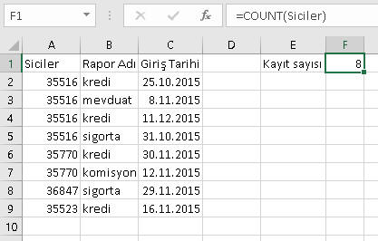
Name içine yazılmış hali de aşağıdadır.

Yeni bir kayıt eklendiğinde
F1 hücresinin hemen 9 olduğunu görüyoruz, zira Siciler Name'i de otomatik
genişlemiş ve A2:A10 olmuştur.
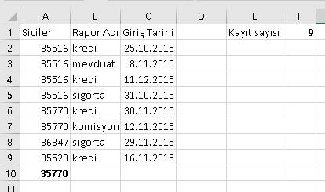
Diğer Named Rangelerde
olduğunun aksine Dinamik Range'ler NameBox içinde görünmezer. Aşağıdaki ilk
resimden görüleceği üzere önceki örneklerde tanımladığımız diğer 3 Name var,
ama Siciler yok. Fakat Formulas menüsünden Name'e girip baktığımızda
görünmektedir ve onun formülüne tıkladığımızda 2.resimde olduğu gibi ilgili
alanın çevrelendiğini görebiliriz.
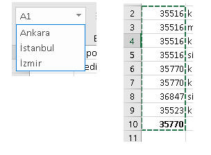
Bu alandaki uniqe sicillleri bir data validation listesi içinde de kullanmak isteyebilirsiniz.
Bunun için Çeşitli Örnekler
kısmındaki 3.örneğe bakabilirsiniz.
XLOOKUP(Office 365)
Sadece Office 365 kullanıcılarında aktif olan bu fonksiyon, yukarıdaki birçok işi bünyesinde barındırıyor. Bakalım bu fonksiyonla neler yapabiliyoruz:
- Hem sola giden vlookup yapabiliyoruz, ki bu hem UDF hem de INDEX-MATCH alternatifidir
- Joker karekterleri destekler(match type)
- Aramaya baştan veya sondan başlayabilir(search mode).
- Bu fonksiyon aynı zamanda bir dinamik dizi fonksiyonu olduğu için birden fazla sonuç da döndürebilir ve bunları sağa doğru "döker"(dök[ül]me kavramının ne olduğunu linkten okuyabilirsiniz)
- İçiçe iki Xlookup kullanarak kolaylıkla kesişim buldurabilirsiniz(Aşağıda bahsettiğim kesişim yöntemlerine alternatif)
- Çoklu kriter verebilirsiniz
Ben detay örnekler yapana kadar bu sayfadan çeşitli örneklere bakabilirsiniz.
Satır ve Sütun Fonksiyonları
ADDRESS(satır,sütun,[tip],[stil],[sayfa]):Verilen
satır ve sütun için A1 veya $A$1 gibi hücre adresi döndürür. Seçimli parametre
olan "tip" için 1,2,3,4 değerleri girilebilir. Default değer 1'dir, yani mutlak adres($A$1)
döndürür. 4 ise göreceli demektir. 2 ve 3 ise yarı mutlak yarı göreceli. Stil
parametresini çok kullanmayacağız. Sayfa olarak da istersek bu adresi başka bir
sayfanın adresi olarak döndürmemizi sağlayan sayfa ismi girilebilir.
Bu fonksiyonu tek başına kullanmak pek birşey ifade etmez. Bunu diğer
fonksiyonlarla kullandığımızda ne işe yarayacağını daha iyi anlayacaksınız.
Bu kullanım şekillerini aşağıdaki çeşitli örnekler bölümünde görebilirsiniz.
ROW/COLUMN([referans]):Belirtilen
referansın satır/sütun numarasını döndürür. Hücre belirtilmezse formülün
girildiği hücrenin kendisi baz alınır. Referans olarak bir hücre grubu
girilirse ilk hücre baz alınır.
=ROW(C2) //2
=COLUMN(D4:F6) //4
=ROW() //8.satırda diyelim, 8
Bunlar da tek başına kullanılmak yerine bir fonksiyon kombinasyonu olarak
kullanılır. Aşağıda örnekleri göreceğiz.
ROWS/COLUMNS([referans]):Belirtilen
referansta kaç adet satır/sütun olduğunu döndürür.
=ROWS(C2) //1
=COLUMNS(D4:F6) //3
Bunlar da tek başına kullanılmak yerine bir fonksiyon kombinasyonu olarak
kullanılır. Aşağıda örnekleri göreceğiz.
Yine de ROWS'un güzel bir kullanımını burada örneklendirmek istiyorum.
Aşağıdaki tabloda bir filtreleme işlemi yaptım ve toplam kaç kayıttan ne
kadarının gösterildiğini en tepeye yazdırım. (Normalde bir alana filtre
uyguladığınızda durum çubuğunun sol köşesinde ne kadar kaydın gösterildiği
yazar, ancak bu alandan çıkıp tekrar geri geldiğinizde göstermez)
Formüllerimiz şöyle:
=ROWS(Table1) //tabloda kaç kayıt var
=SUBTOTAL(3;Table1[Hacim]) //B1'deki formül.Filtrelenmiş alanda kaç satırın gösterildiğini verir
C1'de ise bu ikisini birleştiriyorum.(Aslında tabiki sadece C1'i göstermek
lazım ama ben size parça parça göstermek istediğim için ayrı ayrı yazdım)
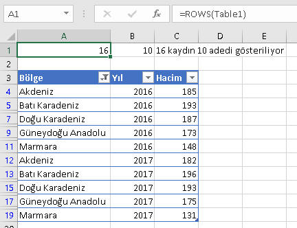
Diğer Fonksiyonlar
CHOOSE(indeks,değer1,değer2...değer254):1-254
arasında verilen indeks numaralarına denk gelen değerleri döndürür. Özellikle Ay
no veya gün noya göre ay adı/gün adı yazdırmada çok faydalıdır. Böylece içiçe if
yapmaktan veya bir Vlookup bölgesi oluşturmaktan kurtulmuş olursunuz. Tabiki
liste çok uzunsa işlemi Vlookup ile yapmak çok daha makul olacaktır.
=CHOOSE(A2;"Ocak";"Şubat";"Mart")
Bir başka örnek de belirli kişilere rasgele bölge kodu/doğum yılı v.s
atamak olabilir.
=CHOOSE(RANDBETWEEN(1;3);1979;1981;1992)
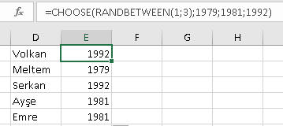
Choose'a parametre olarak belirli hücre grupları da verebilir ve bu dönen
hücre alanlarını başka fonksiyonlarla birlikte kullanabiliriz. Mesela
aşağıdaki örnekte, yapılan seçime göre SUM edilen hücre alanı değişmektedir.
=SUM(CHOOSE(A2; D2:D10; E2:E10;F2:F10))
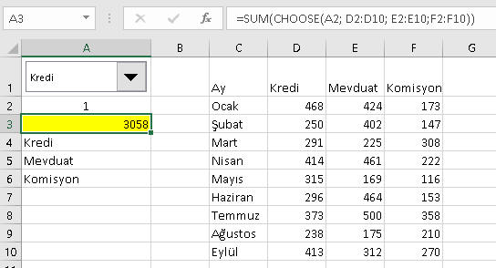
NOT: Yukardaki Combobox kullanımının detaylarını
buradan öğrenebilrsiniz.
Choose fonksiyonunun dinamik grafik yapımında nasıl kullanıldığını görmek
için
bu sayfaya göz atmak isteyebilirsiniz.
INDIRECT:Metin formundaki bir referansı
gerçek bir referansa dönüştümeye yarar. Aşağıdaki örnekte A4 hücresine
INDIRECT(A3) formülünü girdim. A3'te A1 metni var, bunu bir referans olarak
algılayıp, A1 hücresindeki değeri getirdi.
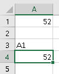
Bu fonksiyon bize Data Validation(Veri
Doğrulama)'ın da desteğiyle birbirine bağımlı Comboboxlar yapmamızı sağlar.
Bunu bir örnekle açklayalım.
Diyelim ki Data Validation ile kullancıya bir hücrede il isimlerini
seçtiriyoruz. Kullanıcı İstanbul seçince, alttaki comboboxta yine Data
Validaiton ile İstanbul ilçeleri gelsin istiyoruz. Bunu şöyle yaparız.
- İl ve ilçeleri bi yere aşağıdaki gibi altalta yazarız.
- İlçe isimlerini seçip bunları aşağıdaki mavi dairedeki gibi Named
Range yaparız.
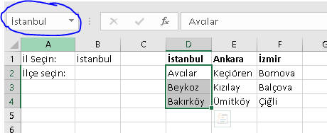
- Sonra Data Validation ile B1 hücresinin kaynağını aşağıdaki gibi
belirleriz
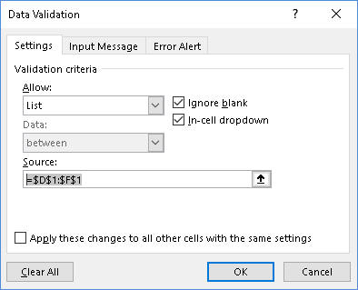
- Son olarak da B2 hücresinin kaynağını aşağıdaki gibi belirleriz.
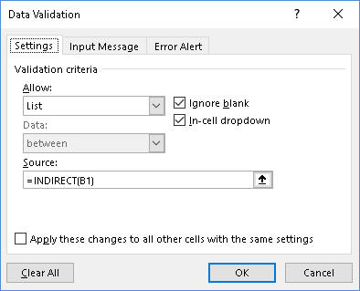
B1'de İstanbulu seçince B2'deki formül İstanbul Name'indeki değerleri
içine yükler.
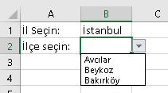
Kesişim Bulma
Excelde iki boyutlu bir veri kümesinde belirli satır ve sütunların
kesiştiği hücreyi bulmanın birkaç yolu vardır. Hepsine bakacağız.
Siz, o
anki ihtiyacınıza hangisi uyuyorsa onu kullanabilirsiniz.
Şimdi öncelikle, aşağıdaki matrise bakalım. Burada C Grubunun
2.seviyesine denk gelen rakamı yani 11000i bulmak istiyoruz diyelim.
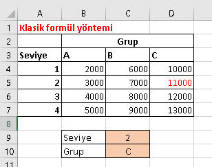
1.Yöntem:Offset ve Match kombinasyonu
=OFFSET(A3;MATCH(C9;$A$4:$A$7;0);MATCH(C10;$B$3:$D$3;0))
Yaptığımız işlemin açıklaması şöyle:Offset ile A3 hücresini referans
alıyoruz, ikinci parametre olarak Match ile 2'nin kaçıncı satırda olduğunu
bulup onu veriyoruz, üçüncü parametre olarak da yine Match ile C'nin kaçıncı
sütünda olduğunu öğrenip onu veriyoruz. Sonuç olarak A2'nin 2 satır aşağısı
ve 3 sütun sağ tarafına bak diyoruz, yani D5 hücresine.
2.Yöntem:Vlookup ve Match kombinasyonu
=VLOOKUP(C9;$A$3:$D$7;MATCH(C10;$B$3:$D$3;0)+1;0)
Burda yaptığmız işlem ise Vlookup'a aranan değer olarak 2'yi vermek,
aranan alan olarak A-D kolonlarını vermek. Kaçıncı kolona bakması
gerektiğini ise
C10'daki değeri B3:D3 arasında nerde buluyorsa onun 1 fazlası olacak şekilde
buluyor.
3.Yöntem:Index-Match kombinasyonu
=INDEX($B$4:$D$7;MATCH(C9;$A$4:$A$7;0);MATCH(C10;$B$3:$D$3;0))
Bu yöntem, kesişim deyince akla gelen ilk yöntemdir aslında. Yazımı
öncekilere göre biraz daha uzundur ama esas varoluş sebebi bakımından
Index-Match tam bir kesişim bulma yöntemidir. Bunun kullanım şeklini zaten
yukarıda gördüğümüz için ayrıca açıklamaya gerek görmüyorum.
Çeşitli Örnekler
Bir alandaki kolon sayısına göre ortalama almak
Ne zaman bir alandaki kolon sayısına ihtiyaç duyarız? Mesela dinamik bir alanınız var ve
burdaki rakamları toplayıp kolon sayısına böldürdüğünüz bir formül var. Bu, aslında ortalama aldırmak oluyor
ancak klasik AVERAGE formülünü kullanmak istemiyoruz, çünkü arada bazı boş hücreler var, biz boş hücreleri
0 olarak ele almak istiyoruz, halbuki AVERAGE formüülü boş hücreleri dikkate almaz. Ama biz 0 olmasını
istiyoruz çünkü o ay ilgili kişin 0 satış yaptığını biliyoruz ve ortalaması düşsün istiyoruz, daha doğrusu
haksız yere ortalması yüksek çıksın istemiyoruz. Şimdi formülümüzü görelim.
=SUM(B2:G2)/COLUMNS(B2:G2)
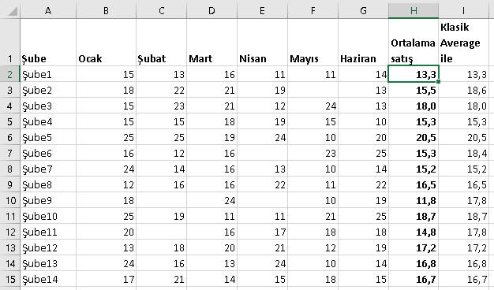
Bir alandaki son hücrenin adresi
Bazen bir hücre grubundaki son hücrenin adresini elde etmek isteriz, ve sonra
bunu da başka bir hücredeki formülün argümanı olarak kullanırız. Dinamik bir
yapı olsun istediğimiz için de dinamik bir formülle tespit etmemiz
lazım.
=ADDRESS(ROW(Table1)+ROWS(Table1)-1;COLUMN(Table1)+COLUMNS(Table1)-1)
Formül şöyle işliyor. Row(Table1) ile alanın nerden başladığını
buluyoruz, hatırlayacak olursanız ROW fonksiyonu bir alanla
kullanıldığında ilk hücresini baz alıyordu. ROWS ile toplam kaç satır
olduğunu buluyoruz ve 1 çıkararak son hücrenin satır numarasını
buluyoruz. Örneğin Table1 A8:A500 arasını kapsıyorsa, 8+483-1=500.satır
olduğunu buluruz. Aynı mantıkla da sütun numarası elde edilir. Sonra
bunlar ADDRESS ile birleştirilir
Bir alandaki uniqe değerleri listelemek
TEST SORULARI
Son Sorumuz şuymuş:Bir metindeki tüm noktaları yoketmek istiyorsunuz. Hangi fonksiyonu kullanırdınız?
Soru:
A şıkkı:
B şıkkı:
C şıkkı:
D şıkkı:
Doğru Cevap
Etiketler
İlişkili konuyu seç
20001
Label
* Sorulara verilen yanlış cevaplardaki esprili yorumlarım için hoşgörünüze sığınıyorum.
* Test ve Ödevlerdeki bazı detaylar burada anlatılmamış olabilir. Bunları kendiniz araştırıp bulmalısınız.
* Birden çok konuya ait içeriği olan ödevler var. Algoritmik açıdan bakıldığında o an en uygun konuya adreslenmiştir.
Dikkat! Bir soruya cevap verdikten sonra geri dönemezsiniz.
ÖDEVLER
3
0
Ödev No:70.
Bir kolona vlookup yaptığınızda, Vlookup'ımız hedefin lookup değeri boş olması durumunda onu 0 döndürür, halbuki biz 0 gelmesini istemiyoruzdur. Öyle bi fonksiyon yazın ki, bunlar için "değer yok" gibi birşey yazsın.
 Çözüme bakın(Başka türlü de çözülebilir tabi, bu benim çözümüm.)
Çözüme bakın(Başka türlü de çözülebilir tabi, bu benim çözümüm.)
=IF(LEN(VLOOKUP(A3;E:F;2;0))=0;"Değer yok";VLOOKUP(A3;E:F;2;0))